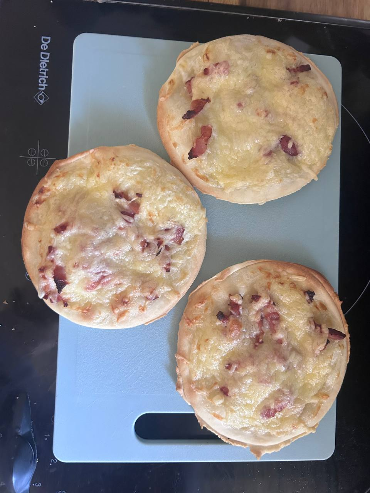

← Recettes

Pizza Crème Lardons
⏱️ 15 min
🔥 12 min
👥 8-9 pizzas
🍽️ Plat
Ingrédients
- 2 pâtes à pizza
- 150 g de crème fraîche épaisse
- 200 g de lardons
- 250 g de fromage râpé
Préparation
-
1Préchauffer le four à 210°C
-
2Faire revenir les lardons à sec dans une poêle 3-4 min, puis les égoutter sur du papier absorbant
-
3Découper des cercles de pâte au bol (~15 cm) et les poser sur une plaque avec papier cuisson
-
4Étaler une fine couche de crème sur chaque fond
-
5Répartir les lardons puis couvrir de fromage râpé
-
6Enfourner 10-12 min à 210°C, jusqu'à ce que les bords soient dorés
❄️ Congélation
-
1Laisser refroidir complètement
-
2Pré-congeler à plat 2h sur une plaque pour qu'elles durcissent
-
3Empiler en bloc serré dans du papier cuisson ou un sac de congélation
-
4Pas besoin de décongeler : réchauffer directement au airfryer 6-8 min à 160°C